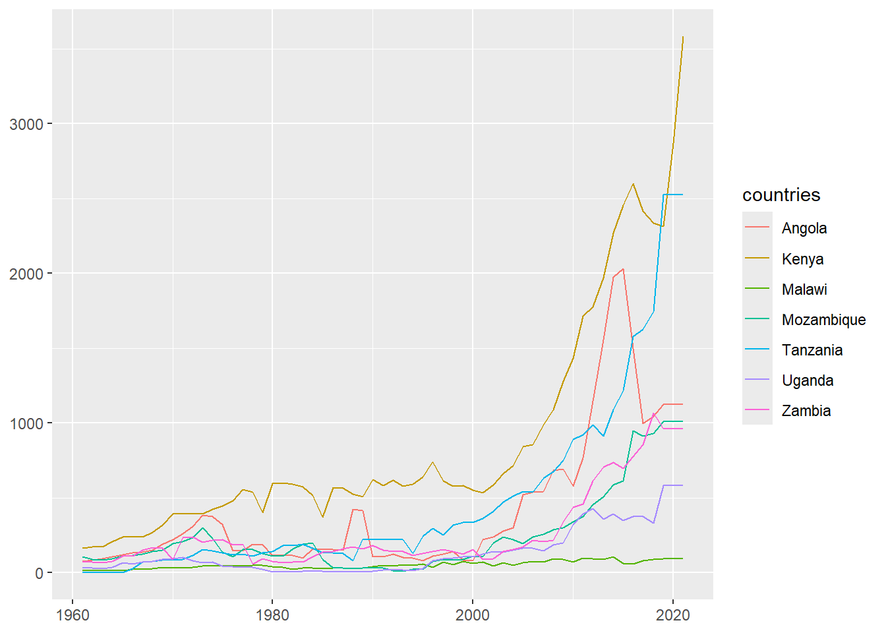
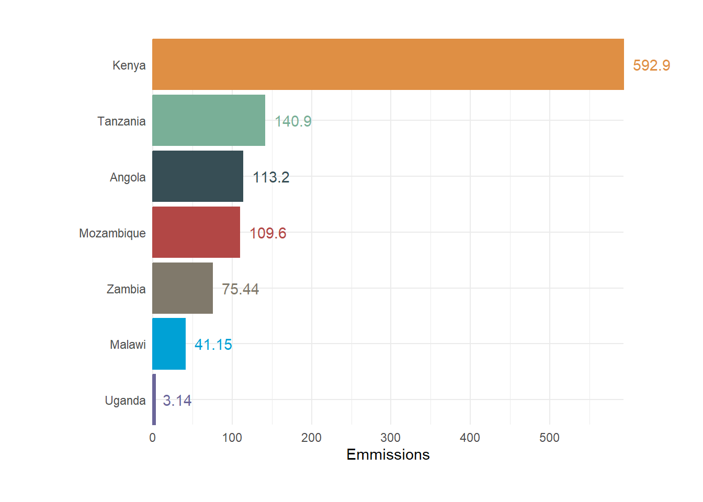

![]()
Introduction
One of the main critiques of ggplot2 (Wickham, 2016) is its static nature, often cited as a limitation compared to more interactive tools like Highcharts. However, this doesn’t mean that animation is entirely unavailable. Enter gganimate, a natural extension of ggplot2 designed to animate visualizations and capture changes in data over time or other variables. With gganimate, you can create dynamic charts and export them as a series of PNGs, or as a single GIF or MP4 file.
Today, you’ll explore gganimate (Pedersen and Robinson, 2024) and discover how to create compelling animated visualizations. By the end of this article, you’ll have a set of visually engaging animations to showcase your data. Let’s start by loading packages we need for this session;
Dataset
The dataset we will use for the example exercises is “Global CO2 emissions from cement production” (Andrew 2022).
Code
# A tibble: 142 × 221
Year Afghanistan Albania Algeria Andorra Angola Anguilla
<dbl> <dbl> <dbl> <dbl> <dbl> <dbl> <dbl>
1 1880 NA NA NA 0 NA NA
2 1881 NA NA NA 0 NA NA
3 1882 NA NA NA 0 NA NA
4 1883 NA NA NA 0 NA NA
5 1884 NA NA NA 0 NA NA
6 1885 NA NA NA 0 NA NA
7 1886 NA NA NA 0 NA NA
8 1887 NA NA NA 0 NA NA
9 1888 NA NA NA 0 NA NA
10 1889 NA NA NA 0 NA NA
# ℹ 132 more rows
# ℹ 214 more variables: `Antigua and Barbuda` <dbl>, Argentina <dbl>,
# Armenia <dbl>, Aruba <dbl>, Australia <dbl>, Austria <dbl>,
# Azerbaijan <dbl>, Bahamas <dbl>, Bahrain <dbl>, Bangladesh <dbl>,
# Barbados <dbl>, Belarus <dbl>, Belgium <dbl>, Belize <dbl>, Benin <dbl>,
# Bermuda <dbl>, Bhutan <dbl>, `Bonaire, Saint Eustatius and Saba` <dbl>,
# `Bosnia and Herzegovina` <dbl>, Botswana <dbl>, Brazil <dbl>, …We can subset the emmission measurement from 1960 onwards, and any columns with all NAs or zeros have been dropped. The table below displays all the data that will be used in this tutorial.
Code
# A tibble: 62 × 109
Year Afghanistan Algeria Angola Argentina Armenia Australia Austria
<dbl> <dbl> <dbl> <dbl> <dbl> <dbl> <dbl> <dbl>
1 1960 18.0 523. 79.4 1305 89.6 1381 1399
2 1961 21.8 530. 76.9 1436 100. 1414 1523
3 1962 29.1 432. 83.3 1446 113. 1450 1512
4 1963 50.9 436. 94.5 1254 120. 1541 1635
5 1964 61.8 389. 105. 1439 128. 1792 1865
6 1965 83.6 367. 120. 1632 143. 1879 1999
7 1966 87.2 327. 131. 1723 159. 1817 2224
8 1967 65.4 360. 138. 1756 168. 1890 2246
9 1968 47.1 429 152. 2064 174 1941 2250
10 1969 50.9 469. 189. 2148 179. 2130 2253
# ℹ 52 more rows
# ℹ 101 more variables: Azerbaijan <dbl>, Bangladesh <dbl>, Belarus <dbl>,
# Belgium <dbl>, `Bosnia and Herzegovina` <dbl>, Brazil <dbl>,
# Bulgaria <dbl>, Canada <dbl>, Chile <dbl>, China <dbl>, Colombia <dbl>,
# Croatia <dbl>, Cyprus <dbl>, `Czech Republic` <dbl>, `North Korea` <dbl>,
# `Democratic Republic of the Congo` <dbl>, Denmark <dbl>,
# `Dominican Republic` <dbl>, Ecuador <dbl>, Egypt <dbl>, …We notice that using the select_if have removed even the countries we are interested, therefore, we need to make some changes to the code and use the filter verb instead
Unfortunate, the dataset is in wide format and for us to visualize and analyse to compare the emmissions across the countries, we need to convert the dataset from wide to long format first.
Create and visualize the emmission of cement productions for the selecte dcountires in the Africa continent.
Code

Then rank the cement emmission for all the countries for over the entire period the dataset was sampled. TO do that we use tne rank function and pass the argument of annual emmisions. The rank function will assign the rank for the country with the highest emmision as to the country with the lowest emmisions
Let’s filter the cement production emmissions for 2021
Year | countries | Emmissions | Rank |
|---|---|---|---|
2,021 | Kenya | 3,583.00 | 1 |
2,021 | Tanzania | 2,524.00 | 2 |
2,021 | Angola | 1,124.00 | 3 |
2,021 | Mozambique | 1,011.00 | 4 |
2,021 | Zambia | 961.00 | 5 |
2,021 | Uganda | 581.80 | 6 |
2,021 | Malawi | 94.16 | 7 |
We notice that in 2021, data on emissions from cement production for several African countries were compiled and ranked in ascending order. Malawi emitted the least amount of emissions, with 94.16 tons. Following Malawi, Uganda emitted 581.8 tons, Zambia emitted 961 tons, and Mozambique emitted 1011 tons. Angola followed with 1124 tons of emissions, Tanzania with 2524 tons, and Kenya with the highest emissions of 3583 tons.
Creating and Styling a Bar Chart for a Single Time Period
Creating an animated chart can be time-consuming, so it’s wise to start with a simpler task by building a visualization for a single time period. This allows you to ensure that everything appears exactly as you intend. For race charts to function correctly, they require one essential element: the rank. In our case, the rank indicates the position of a ticker’s value compared to other tickers. Essentially, it determines the position of each column in the bar chart.
Code
ggplot(
data = rankings |> filter(Year == 1980),
aes(x = reorder(countries, -Rank), y = Emmissions, color = countries, fill = countries)
)+
geom_col()+
coord_flip(clip = "off", expand = FALSE) +
geom_text(aes(label = labelling), hjust = -.25) +
theme_minimal() +
theme(
legend.position = "none", axis.title.y = element_blank(),
plot.margin = margin(1, 2, 1, 2, unit = "cm")
) +
ggsci::scale_color_jama()+
ggsci::scale_fill_jama()
Animate
Animating a chart with R gganimate is easy. The only changes required in the charting code are removing the data filtering to capture all time periods and storing the entire plot into a variable. We assign our ggplot object as p, which is going to be fed into the animations functions
Code
p = ggplot(
data = rankings ,
aes(x = reorder(countries, -Rank), y = Emmissions, color = countries, fill = countries)
)+
geom_col()+
coord_flip(clip = "off", expand = FALSE) +
geom_text(aes(label = labelling), hjust = -.25) +
theme_minimal() +
theme(
legend.position = "none", axis.title.y = element_blank(),
plot.margin = margin(1, 2, 1, 2, unit = "cm")
) +
ggsci::scale_color_jama()+
ggsci::scale_fill_jama()Once we have the plot object, we can animate with gganimate as the chunk below highlight. The p object represents a basic ggplot created. The transition_states function from gganimate is used to animate the plot based on the Year variable, with a transition length of 4 seconds between states and each state lasting for 1 second. The view_follow(fixed_x = TRUE) function keeps the x-axis consistent throughout the animation for a stable frame of reference. The plot’s title dynamically updates to show the current year using the {closest_state} syntax. The caption at the bottom indicates the source as “SEMBA@2024”.
This approach allows for a dynamic and engaging visualization of changes in annual cement production over time.
The animate() function will generate a GIF with a resolution of 1024x768 and a total of 600 frames. This means that the function will create a sequence of 600 images and compile them into a single animated GIF file. The resulting animation will have a resolution of 1024x800 pixels, providing a high-quality visual output.

References
Citation
@online{semba2024,
author = {Semba, Masumbuko},
title = {Visualize and Compare Change over Time Using Gganimate.},
date = {2024-06-20},
url = {https://lugoga.github.io/kitaa/posts/visualize_line2/},
langid = {en}
}